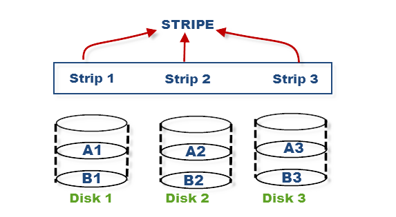
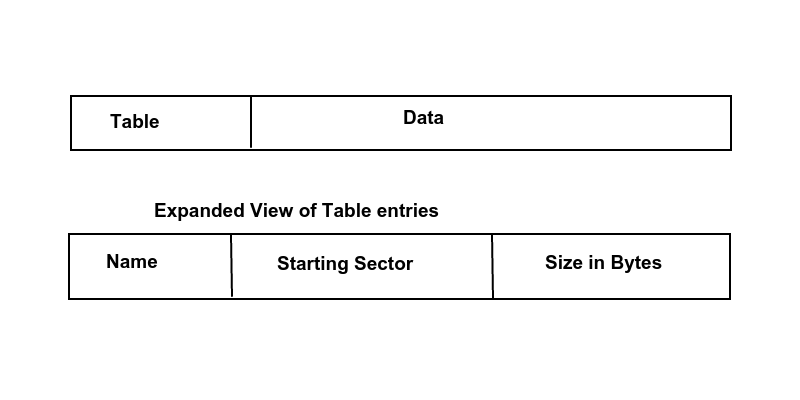

File System Design
Let's talk about a simple, big system which has a size of 120 petabytes (1 PB = 1015 bytes), separated into 200,000 drives, each with around 600 GB of data. This kind of file system was designed several years ago; back then, drivers were smaller, which allowed data to be accessed more quickly. Currently, the file system in place (and used by most of the world's largest commerical companies), is called the General Parallel File System(GPFS) and was developed by IBM. Once, file systems become suffificiently large, the network becomes the bottleneck.
Consequently, there are a number of design tips and tricks for file systems, some of which speed up performance.
- Striping
Striping is the process of splitting a file into pieces and storing into several disk drives. This can be seen visually in the figure above. How does this help performance? If you want ot read your file as fast as possible, you tell all your disk drives to read from a certain sectors, and this parallelization results in faste throughput. The idea of striping applies across machines as well.
- Distributed Metadata
Metadata is data that describes other data; it does not contain a file's actual data, but contains information about where that data is located. The problem with centralized metadata is that it results in a bottleneck. If a lot of people want to access the same file, they all have to approach the same CPU with a request. IBM's GPFS alleviates this problem by having multiple CPUs have metadata about the same file. However, partition awareness becomes an issue with metadata spread across a network. A common form of partition awareness occurs when one client is cut off from all others. Another case may be when half of the network gets shut off from the other half. The important point,though, is that even when the network partitions, the clients and networks know about the partition but they can still operate if the data they are attempting to access is scattered across the network, on their side of the partition. One approach used is the following. If you're on the larger side of the partition, let the operation go through and if you're on the smaller side, you're out of luck. You can look at the file, but you cannot operate on it.
- Distributed Locking
Systems allow users to lock sections of file, and not the whole file. GPFS lets two clients compete for a lock on a file as well, and one client will ultimately win.
- Efficient Directory Indexing
Normally, a directory is an array of entries of files. Imagine a directory of 1000000 files. It would be a pain in the neck to index through 1000000 files to find the file of interest. As a result, GPFS uses a fancier data structure to represent files.
- File System Stays Live During Maintenance
Under the GPFS, you may find that files are more spread out than you like. To appease clients, a lot of reorganization may occur. But a very important design goal is to keep the file system active even during maintenance.
Now that we've seen some of the problems with file systems, let us define file systems. A file system is an abstract organization of data on secondary storage. Secondary storage is slow, big, and persistent, that is, data will persist when the kernel crashes, when the power goes out, or when the program fails. A few of the operations we want to be available to a file system are
- reading data
- writing data and rewriting data
- moving data
- deleting data
- allocating space for data
- searching data
Searching data is a controversial operation. The search operation may be too complicated to implement or the interface may not be what customers expect. Therefore, it is sometimes left out.
In 1974, Paul Eggert was assigned to build a file system to rival UNIX. He had to work with a 16 KiB RAM, 700 KiB disk, 16-bit machine with 512-byte sectors. Keep in mind that Professor Eggert had not yet learned about file systems, nor had an operating system course been created yet.
He decided to partition the disk into two regions: a table and data. The table had entries that could be separated into four fields.
- name (8-byte quantity)
Names with lengths shorter than eight bytes were zero-filled. Names longer than eight bytes were not allowed.
- starting sector (2-byte quantity)
- size of the file in bytes (2-byte quantity)
- Miscellaneous information, such as timestamps (4-byte quantity)
Three of the fields are shown in the figure above. Using this configuration, there were 25 directory entries per sector, and a maximum of 26 total files possible. Also, the convention was that if the name was all zeroes, the file was not being used. Empty file names, thus, were not allowed. Names must be at least one byte long.
Problems with this file system
- number of files limited by code (inflexible)
- internal fragmentation up to 511 bytes due to alignment issues
- no file permission
- the fatal flaw: external fragmentation - when space is available, and it can be used, but it may be too small to meet file requests because the block fo space is too small
- preallocation required (must tell OS how big it is beforehand)
Nice features about this file system
- simple
- good for sequential access and predictability
In the late 1970s, Microsoft released the FAT file system. Their goal was to get rid of external fragmentation and preallocation problems. The disk of the FAT file system looked something similar to the figure above and used 4KiB blocks. The boot sector was the first sector and was reserved for special use. The suerblock had a fixed size, and contains metadata about the file system, such as the version, size, and the number of used blocks. And the rest of the system was mainly data.To navigate the file system, we still use pointers, but we make use of a file allocation table, which has a "next field", telling us where to retrieve the next block of data in a file.
To maximize efficiency, we should proportion out the drive in relation to the file allocation table and data. Assuming 16-bit entries in the file allocation table and 4096-byte blocks, approximately 1/2048 of the disk drive should be allocated for the file allocation table, while around 2047/2048 of the drive should be left for data. In the FAT file system, an entry of 0 corresponds to EOF, and an entry of 216 - 1 corresponds to a free block. Also, there is approximately 256 MB of possible storage. The file system discussed here is the FAT16 file system, but the analagous FAT32 system is very similar; instead of 16-bit entries in the FAT, it uses 32-bit entries, giving 16 GB of possible storage.
What about directories? Directories are also files and are arrays of directory entries. You can think of a directory as a pointer to a linked list of blocks.
Pros of FAT
- no external fragmentation
- no preallocation necessary
- number of files not prelimited by file system
Cons of FAT
- sequential access can be slow
- defragmenting is slow and its tricky
- UNIX syscall lseek is an O(N) operation in FAT
- Another problem arises when renaming files. Suppose you want to rename files within the same directory. This is simple, and can be done with a command like mv foo.c bar.c. Power outages are not an issue, assuming this is an atomic operation.But moving files between different directories gets tricky. Say you did mv a/foo.c b/foo.c. Which new file do we create first? What if a power outage occured right in the middle of this operation? It becomes apparent that moving files in different directories is trouble.